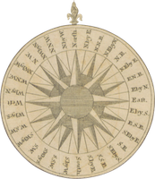
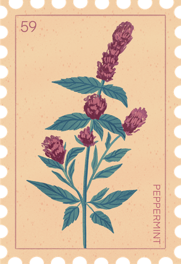
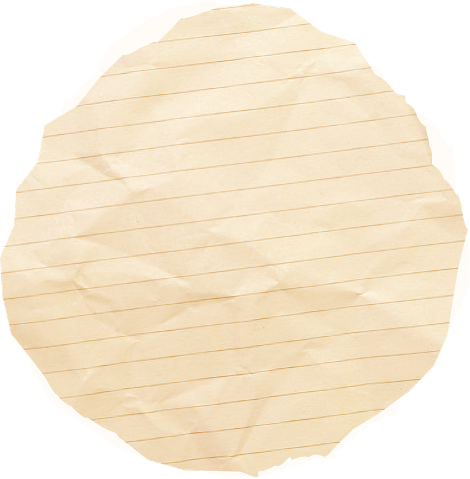
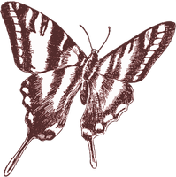
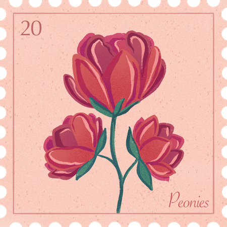
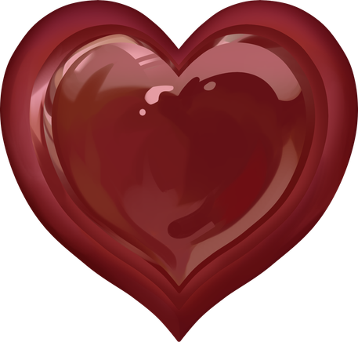

Happy
Anniversary
A celebration of love, growth, and beautiful moments.
Our Journey
Every love story starts somewhere, and ours began with a simple hello — the kind of moment that felt ordinary at first, but ended up changing everything. From that very first conversation, something between us felt natural, effortless, like we had known each other far longer than we really had.
What started as small moments slowly grew into something meaningful. Day by day, our connection strengthened in ways neither of us expected. It wasn’t rushed; it wasn’t forced. It was gentle, calm, and beautifully real.


The Moments


Our relationship isn’t built on grand gestures — it’s built on moments. Moments that seemed small at the time, but now mean everything.
It’s the late-night talks, when the world is quiet and it’s just us.
It’s the shared laughter, the kind that comes unexpectedly, making our hearts feel lighter.
What We Love
What I love most about us is how naturally we understand each other. Even in silence, we feel connected — as if our hearts speak a language only we recognize. We don’t always get everything right, but we always try, and that understanding makes everything easier.
I love how we support each other’s dreams. We celebrate every step forward, encourage every idea, and believe in each other even when doubts try to creep in. With you, every dream feels possible.

Favorite Things
There are so many things I love about you, but these are the ones that stay with me every single day. These are just a few of my favorite things… because the truth is, there are countless reasons why I love you.

You have a way of treating people with warmth, patience, and sincerity.
We learned how to speak honestly, even when the truth felt heavy. We learned how to listen, not just with our ears but with our hearts.
Our Growth
When I look back at how far we’ve come, I realize that our love didn’t just grow — we grew.
Highlights of Our Year
This past year wasn’t just a collection of days — it was a collection of moments that shaped us, strengthened us, and reminded us why our love matters.
Gratitude
There are so many things I’m grateful for, but these are the ones that touch my heart the most.
Love isn’t only about the easy days — it’s about showing up when everything feels heavy. And you did.
Love is a choice, and you keep choosing this relationship with your actions, your patience, and your effort.
My Promise
As we celebrate another year together, I want to make promises that come from the deepest part of my heart — promises I intend to keep, not just today, but for every season of our life.
Not just in the bright seasons, but in the cold ones too. I promise to love you through change, through challenges, through growth, and through every moment we face.
A Love
Still Growing
In the end, our story isn’t defined by a single moment, but by all the quiet ones that led us here. Every step, every laugh, every challenge, every soft “it’s okay”.